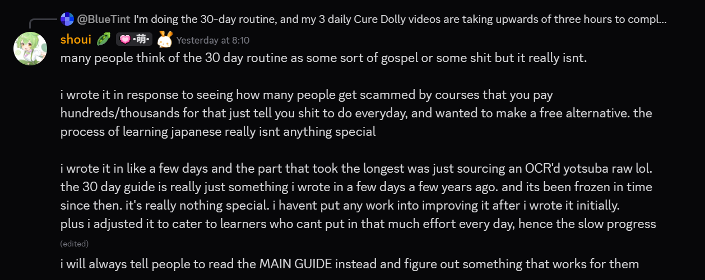

30 Day Japanese (UsagiSpoon)¶
Purpose
This is a pre-decided routine to help beginners learn Japanese with immersion. Only recommended for those that are starting out but have decision paralysis.
A routine to help people learn Japanese from scratch with the immersion method. This is aimed at ABSOLUTE BEGINNERS THAT DONT KNOW HOW TO LEARN JAPANESE AT ALL.
Returning learners/people interested in the immersion method should check out Japanese Guide
This routine is separated by day. Each day has tasks that you need to do.
What you'll expect to know at the end of the 30 days:
- An understanding of the most common Japanese grammar patterns
- A vocabulary of at least 500 words.
- An understanding of basic sentences in slice of life anime.
- The ability to read hiragana, katakana and some common kanji.
- A good foundation to continue learning Japanese on your own.
What I expect from you:
- the will to learn
- 3+ hours of your free time per day available for Japanese.
- a computer (sorry phone users)
IMPORTANT: The purpose of this guide¶
This routine was made in response to decision paralysis some people may experience when learning Japanese. This is by no means definitive and you are free to change any parts of any day to meet your needs.
This is NOT the "TMW Guide", that can be found here: Japanese Guide
This is NOT the "TMW Guide", that can be found here: Japanese Guide

UsagiSpoon is not a guide, not a course, not a challenge and not a regiment!!
Day 1¶
Stage: Starting kana stage¶
The absolute first thing you need to do when you learn Japanese is to learn the kana. Kana is short for hiragana and katakana.
Why and how they are used can get confusing for newcomers to Japanese.
So, I recommend reading [this].
Read it until you get to finish the Hiragana and Katakana section, just before the "Kanji" section.
It is quite a hefty amount of text. It could take some time.
By the way you aren't memorizing the kana with that link. I will explain how you will do that below.
When you are done reading that, copy out the chart from the main guide.
{kind=link}
It is important you learn how to write kana as this can also make it easier to differentiate them too. Don't worry if your handwriting is not pretty.
You can do it on a paper or a screen, it doesn't matter really.
Then, watch this video: https://www.youtube.com/watch?v=_wZHqOghvSs
It is a video by JapanesePod. This should probably be the only Japanese Pod video you should watch though, just sayin'.
Now, go on this website. https://gohoneko.neocities.org/learn/kana.html
Click "show/hide options"
Click "check all" for the categories (Hiragana, Hiragana combinations, Katakana, Katakana combinations). Don't worry about the fonts.
Type the correct romaji in the text box. This is how you'll practice your kana.
Do this for 10 minutes.
You can use this timer here: https://www.online-stopwatch.com/timer/10minutes/
Day 2¶
Stage: Creating your own Japan at home¶
Practice on this site https://gohoneko.neocities.org/learn/kana.html for 10 minutes.
Timer here: https://www.online-stopwatch.com/timer/10minutes/.
Do not forget that all kana must be enabled.
Surrounding your daily life with Japanese is the most important part of the immersion method.
It may be hard to decide, but you'll need to find content that interests you and you'll need to make consuming it a habit.
Slice of life is a good place to start.
There are many, many anime that have simple Japanese.
Here are some suggestions (but you can use anything you want):
Love Live! (Any)
Non Non Biyori
Kimetsu no Yaiba
Koe no Katachi
Hotarubi no Mori e
Toki wo Kakeru Shoujo
Himouto! Umaru-chan
Nakitai Watashi wa Neko o Kaburu
Yuru Yuri
Precure (Any)
Gabriel Dropout
Gakuen Utopia Manabi Straight
K-on
Ao haru Ride
Usagi Drop
Flying Witch
Byousoku 5 Centimeter
Kiniro Mosaic
New Game
See Anime Resources for places to find anime. Downloading the anime is preferred because it makes it easier to bring the anime portably.
Q: Everything here is so boooooring!!!! I'd rather watch something actually good!
A: And I like your way of thinking! Immersion is all about spending time with content that interests you. So please, don't limit yourself to my suggestions.
Your task:
I want you to try immersing for the first time with the "subtitle tutor" method.
The subtitle tutor method is where you watch an episode of an anime with English subtitles, then watch it again without subtitles. Then listen to it when doing other things (wireless earbuds makes this easier).
The flowchart process:
- Watch with English subtitles
- Watch without any subtitles (also known as raw listening)
- Are you done for today? (Yes=Put the episodes on in the background to listen while you do other things. | No= Go back to step 1.)
Essentially, by watching the episode with subtitles first, you have increased the comprehensibility of your input.
While watching the episode raw, don't worry if you can't understand.
Try to focus on the sounds, the speaking patterns and anything in it that you can make meaning out of.
Becoming able to understand Japanese is a skill that takes a long time.
But it all begins with raw listening and trying to make that listening comprehensible.
The subtitle tutor method is only meant to provide context for the audio you are listening to.
I also recommend listening to the audio when doing other things.
By doing that you are essentially filling in the silence with Japanese, which means, even if for a few seconds, you may pay attention to what's being said.
Note: Listening while doing other things = passive immersion.
Listening with undivided attention = active immersion.
Q: Why immersion before any grammar or vocabulary study?
A: Some of you might have wondered why I want you to immerse without knowing any grammar or whatever. And that's because listening is the crux of learning a language. Native speakers are so good at their language because of their environment (the language being there wherever they go), and by replicating that environment you can expect to replicate the results. Listening a lot even if you don't understand makes it easier to learn new words in Japanese and get a deeper feel for the language.
Q: So, I've completed my first episode, what should I do now?
A: You can consider your immersion done for the day but if you want to do more (which is great) then you can roll a dice to decide how many episodes you want to watch.
I didn't want to overwhelm you on your second day, so you'll start learning about grammar tomorrow.
Day 3¶
Stage: Just starting grammar¶
Do your daily kana practice on this site! https://gohoneko.neocities.org/learn/kana.html for 10 minutes.
Use a timer here: https://www.online-stopwatch.com/timer/10minutes/
Now here's where you'll start grammar.
You don't need to do any drills or anything.
You don't need to choose the correct patterns or anything like that.
Everything you will be learning is insanely common and will be reinforced with your daily immersion.
The grammar guide I want you to use is Cure Dolly's Organic Japanese.
The YouTube playlist is here: https://www.youtube.com/playlist?list=PLg9uYxuZf8x_A-vcqqyOFZu06WlhnypWj
For folks out there that prefer reading, here is the Cure Dolly fan-made textbook!
All I want you to do is watch the videos and take notes
(Google Keep note taking site here: https://keep.google.com/)
Note: I recommend turning on the subtitles for Cure Dolly's videos.
Watch 3 videos a day
That is a good number, you will be near the end of her guide after 30 days at that pace.
Take notes.
Q: What should I even put in my notes?
A: You should put information that you feel is important.
Rely on your instincts.
If Cure Dolly says this means that, then you might want to take a note of it.
Your notes do not need to be detailed, and you don't need to show them to anyone.
Your notes are YOUR notes, make them your notes.
Q: Why should I even do notes! I can probably remember everything anyway!
A: I want you to take notes so you can go over them whenever you need to. (Keyword: when you need to!)
You are essentially making your own little mini version of the videos in your notes.
So, if you do forget something, you can always just look at your notes.
Q: I really don't want to take notes...
A: And that is fine!
Note-taking is an area where I do think personal preference is involved.
Stage: Just done your first grammar lessons¶
After you watched your first 3 Cure Dolly videos, you can consider that your "grammar session done for the day".
Now what I want you to do is immerse.
You know the drill.
Q: Do I need to do the "subtitle tutor" method?
A: The subtitle tutor method is not required. It is merely a way to make immersion more interesting in the beginning. I merely presented it to you as a method that is available to you.
Q: What do I do if I keep hearing a word that interests me and want to know what it means?
A: First of all, that's great!
You can use Jisho.org to search up the word.
There's a chance you might be mishearing it so you may not be able to find out.
Tomorrow will get more complex. So, uh, look forward to it...?
Day 4¶
Stage: Learning kanji and new words: Using Anki for the first time.¶
Today you'll be:
- Practicing kana
- Studying grammar
- Using Anki for the first time
- Learning new words and kanji in Anki.
- Setting up a Japanese keyboard on your pc
- Doing your daily immersion.
It is a lot. Please make sure you have enough time today.
Practice your kana on this site https://gohoneko.neocities.org/learn/kana.html for 10 minutes.
After that, do your daily grammar study.
Remember the routine from the previous day: 3 Cure Dolly videos!
After you've done that, let's set up Anki.
First, I want you to watch this video : https://www.youtube.com/watch?v=UDUITtA1jJI
Now let's download Anki.
You can download Anki by visiting the official website (here) and clicking on the Download button. It should scroll the page down to the downloads section. Click the first option.
Download the required deck here (grab the latest .apkg file)
When you first open Anki, the first thing you'll see is the "interface language selector". This just decides what language Anki will be displayed in. Any language is fine.
Go into Tools on the top bar, and click Preferences (Ctrl+P).
In this window, click on the Review tab and change the Learn ahead limit to 900.
Now click Close.
In Anki, there are 3 buttons on the bottom of the window. The button Import File is how you'll be importing your downloaded deck. Once clicked, it should open the file picker window.
Choose your downloaded deck.
When it finishes importing it should show you a box with bunch of text. Just press ok.
Now you'll see the deck and a blue number next to it.
The blue number is how many new cards you will be doing in a day.
20 cards is the default.
20 cards may or not be manageable.
You might want to lower the number of cards if you find it too hard to keep up with reviews. But don't worry about it right now.
Click the cog icon next to the Kaishi 1.5k deck.
Click Options.
Change Maximum reviews/day to 9999. This just means "uncapped".
The default is 200 and I don't think your cards will pile up that high if you do Anki every day but,
It is good practice to uncap your review limit.
Just some Anki know-how.
You also need to change the Learning steps to 1m 5m 10m.
Change Insertion order, to Sequential (oldest cards first)
Under the Lapses section, change the Relearning Steps to 10m.
Under the Display Order section, change the New/review order to Show before reviews.
Now click Save.
I also want you to install the Speed Focus Mode Anki add-on. I will explain why later, but let's just install it now.
Click on Tools at the top of Anki, and click Add-ons.
Click Get Add-ons....
Paste this code into the box: 1046608507 and click OK.
You need to restart Anki. Close Anki, and launch it back up.
Click the cog icon next to the Kaishi 1.5k deck.
Hold the Shift key and click Options.
A different looking menu with some red text should open. (If it did not, you did it wrong. You need to hold Shift while clicking Options).
In the General tab, there are a few settings you need to change.
Change Automatically play alert to 15 seconds.
Change Automatically show answer to 30 seconds.
Change Automatically rate 'again' to 180 seconds.
Now let's get to studying the deck.
When you click on the name of the deck, you'll be able to start learning by clicking Study now
First thing you'll see is an explanation card. Feel free to delete this one.
The next card is a word that is using kanji.
If you click "Show answer", it reveals the back of the card, and you will be able to find out how to read the word on the front.
The deck has other features, such as word meaning, audio, sentence and translations.
BUT the only things you should be memorising is the word on the front, reading and word meaning.
Do not waste your brain power on thinking about anything else.
Look at the bottom bar. There are 4 buttons. These are your grading options.
In Anki, you have to manually grade yourself.
Think of Again as "I GOT IT WRONG". Easy as SUPER EASY, Good as normal/usual/eh, and Hard as "I struggled with this it took me a while BUT I still got it right".
Because this is a card that is seen for the first time, press "Again".
When seeing "unseen cards" (cards that you haven't graded yet.) it is common and best practice to reveal the back (by pressing Show answer), then read the important information (Reading and Meaning) and then pressing Again.
This will send the card to the "Learning" pile.
You see the red number on the bottom bar turned from 0 to 1?
The red number is the learning pile.
Blue: New pile
Red: Learning pile
Green: Review pile
The learning pile means Anki will show you the card multiple times so you can remember it.
Getting a "Good" enough times will cause the card to graduate. This means you'll see it in x number of days (Usually 1 day for new cards).
When the learning pile (red number) goes down that means the card has graduated.
Do not spend a long time looking at the same card
When you don't know the word even after 15 seconds of looking at it, then looking at it for even longer doesn't mean you'll suddenly remember it.
So, the purpose of the Speed Focus Mode add-on is to stop you from spending too much time on one card.
My card learning method
Step 1: Look at the card.
Step 2: Recognize whether it is a new card or not.
Step 3: Reveal the back (Show answer) after realizing it is a new card.
Step 4: Read the reading.
Step 5: Read the meaning.
Step 6: Let the audio play.
Step 7: For now, press "Again"
Step 8: Above 7 steps will be the same if the next card is also a new card but...
Step 9: If the next card is one I've already seen before, I test my knowledge.
Step 10: I try to recall the word's meaning and the reading.
Step 11: There are sometimes more than 1 meaning. Only 1 meaning is enough.
Step 12: I reveal the back.
Step 13: I grade myself depending on if the meaning and reading I thought it was, was correct.
Step 14: I usually use the Good button if I got it correct. Again if it wasn't correct.
After you have successfully learned 20 cards, you can consider your Anki done for the day.
The next day you can expect to see some cards in the green (Review) pile.
You will also have a fresh batch of 20 new cards!
Please make sure you do Anki every day!
Q: Should I worry if I forget a lot?
A: No.
Anki is made for things you're likely to forget.
You are very likely to forget words of a language you just started learning.
I don't think it is strange if you forget more than half of what you learn when a day passes by.
You're likely to forget these words without Anki, so that's why you need to keep Anki'ing them so you can finally learn the word.
In other words, just keep doing Anki.
If this continues for a while then you might want to think back on your method of doing Anki.
Q: Leeches (Words not sticking)
Leeches are when you keep forgetting the word no matter what.
Memory works by picking up on cues.
When words don't stick, it means there are multiple things in the wider scope of the word that makes it so your mind isn't picking on any cues.
In easier terms, you need more, or different information than the information on the card.
For these leeches, I recommend looking at them in example sentences. You can use Jisho.org with the #sentence tag to see example sentences with an English translation.
Setting up a Japanese Keyboard
Now let's set up a Japanese keyboard.
Read this article: http://www.miamioh.edu/cas/academics/centers/ilrc/technical-support/jpn-win-keyboard-entry/
The article is very good.
After you've done that lemme teach you the most useful functions.
Alt` (backquote)(the key left of 1): Switch from entering just letters like these to kana like this: かな. if you type "kana" when the symbol on the taskbar is an "A" it will just be "kana" but if the symbol is あ then it will become "かな"
Space: Conversion. When you want to type a kanji, you have to type its reading, and then use space to convert it. Due to Japanese's... japanesesiness, there are multiple conversion candidates for the kana you entered. Let's try a word you probably just learned, like 言う. To type that in kanji you have to switch to kana input mode (the あ symbol) and type いう, then press space until 言う is selected, and then press Enter. If you want to enter kana without converting, just type what you want and press enter.
F7: Katakana conversion.
WinSpace: Switch input methods (only effective if you have more than one input method (example English (UK) and Japanese (Japan))
Now I think it is about time you do your daily immersion.
I hope the dice game helped you get used to immersing.
I recommend you decide on a set number of anime episodes to use for immersion per day.
If you can't decide, then by all means, let a dice decide for you!
Day 5¶
Go on this site https://gohoneko.neocities.org/learn/kana.html and practice kana for 10 minutes. https://www.online-stopwatch.com/timer/10minutes/.
Now do your daily Anki.
Anki is tough in the beginning.
But it gets better I promise!
Your Anki today will be slightly different. You'll have a blue number AND a green number next to the deck.
The green number is your reviews.
Make sure you stay on top of your reviews!
Important word of advice: If you ever become unable to keep up with piling reviews, then reduce your new cards per day limit!
After you've done your Anki for the day, you should get onto your daily grammar study.
3 Cure Dolly videos!
After that, it's just your daily immersion.
Q: How many episodes will it be???
Q: What should I be looking out for when listening?
A: The sounds of it, the speaking patterns, the "words" that pop up a lot, the words that you learned, the grammar that you learned etc.
Every little bit counts.
Day 6¶
Stage: First ever reading practice: Japanese subtitles!¶
Today you'll start reading practice for the first time!
It is going to be quite tough.
But don't worry if you don't understand it!
Every bit counts!
First, practice kana for 10 minutes.
Kana Practice Site
10 Minute Timer
After that, go on to doing your Anki.
After your Anki, do your 3 Cure Dolly videos.
Then let's get on to reading.
Your first reading content will be anime with Japanese subtitles.
It is kind of tricky to set it up, but let's go through it.
First, you will need Yomichan.
Click on this link to read my guide on it.
After you have set up Yomichan, follow the rest of these steps.
In your Chrome extension settings (chrome://extensions), enable "Developer mode" in the top right.
Now download the asbplayer Extension
It has to be installed manually; it is not on the Chrome Web Store.
You need to unzip the .zip file first.
Now you go in your Chrome extension settings and click "Load unzipped"
Choose the unzipped folder.
Restart your browser.
Now you need to get subtitle files for the anime you want to watch.
Let's just use... Love Live (2013) as an example.
The site Kitsunekko has the biggest collection of Japanese subtitles for anime.
(NOTE: The site has a tendency of going down randomly. You can view a backup here)
I scrolled down to "Love Live!", and downloaded the "Love Live! (01-13) (Webrip).zip" file.
After unzipping the file, I got a bunch of .SRT files.
.SRT files are subtitle files.
Now what you need to do is drag and drop an .SRT file onto a video.
The asbplayer extension works with Hianime. I recommend streaming from there.
Before you start playing an episode, make sure you have this page open: https://killergerbah.github.io/asbplayer/
When an episode starts playing, you can drag and drop an .SRT file onto it.
The subtitles should load and work.
English subtitles display at the same time, which is bad for learning because English subs can confuse you when you try to understand the actual Japanese structure behind the meaning. For just giving context to the audio, they are fine though. Anyway, to disable English subtitles, click the CC icon on the video player controls and click Off.
By using Shift on a word, Yomichan should pop up with a dictionary definition.
But there is a problem. The subtitle file for Love Live is horribly out of sync!
This means the subtitles don't match the timing of the audio.
Luckily, asbplayer supports adjusting the timing.
You can do that with CtrlShiftLeft or Right. Sometimes it doesn't work if you don't click on the video first.
You will need to experiment to find the right timing. For Love Live it was -8400ms.
It might be hard to figure out what subtitle belongs to what audio when reading is so difficult.
Sentences written in kana make it easier to tell which is which though.
This page https://killergerbah.github.io/asbplayer/ displays the subtitles in a list. This makes it easier to go back to a line you missed. It only works if you had it open before loading the subtitle.
This also enables you to "read" the anime! Which I recommend you do!!!
So, what's the routine?
Watch the anime with Japanese subtitles first.
Then focus your attention on just reading it.
Q: How many words do I look up?
A: I think you should decide this using a 20-sided dice, per episode.
Roll!
After you've looked up your amount just watch the rest with Japanese subs.
If anything piques your interest, then feel free to look it up!
Q: When watching with Japanese subs, do I try to read everything on the screen?
A: No. I generally recommend looking up the number of words the dice decided and then just watch the rest of the episode without looking anything up or stopping to read anything, but you should focus on how the kana are pronounced etc.
Q: When I look up something, or need to read something, do I pause the video?
A: Yes! Pause the video when you need to look up!
Q: What is the point of the subtitles in a list?
A: You do it so you can do "raw reading practice".
When the anime playing, you are doing half-reading half-listening.
When you remove the audio part and just read the subtitles in a list, you are doing the equivalent of real reading!
Q: Does the dice decide how many words I look up while watching the anime or while reading the subtitles in a list?
A: Roll another 20 sided dice for when you read the anime.
Q: How many episodes should I read?
Focus on reading a single anime episode until you've looked up the amount of dice decided words.
Q: Is it possible to understand everything by spending 30 minutes spamming Yomichan on a sentence?
A: Short answer: No. Comprehension is a gradual process.
Long answer:
There are many things you will not understand just by using a dictionary.
There are many factors that go into understanding something.
There are obvious factors such as vocabulary and grammar.
But there are also less obvious ones such as the contexts that that piece of language is often used in, which in turns leads to its meaning.
In a vacuum, studying vocabulary and grammar increases your ability to understand things.
But understanding the use of the vocabulary and grammar in contexts further increases your understanding of the sentence.
This works especially well for sentences that have only one piece of language that you aren't comfortable with.
This doesn't work well for hard sentences though.
Because there is too much language information in the sentence that you are too unfamiliar with.
The best you can do for hard sentences is to look up the vocabulary in them.
While it may not be enough to understand that sentence at that time, your newly found knowledge of the word can help you connect it to some meaning in a later context.
With more study and immersion (understanding things in context), your understanding of Japanese will increase.
Q: Do I have to change the anime I'm reading to the one I last watched?
No. I actually recommend reading the same one until you read the end.
But you don't have to always use the same one if it no longer interests you.
Q: How can I expect to remember the words I look up?
A: Great question! It all comes down to repetition. The more reading you do, the more words you will remember.
In other words, don't fuss over the words you look up right now.
Looking over them a gajillion times isn't a productive use of your time.
What you should actually do is: Look at the meaning, look at the reading. Then go like "Oh, right!". And move on.
Q: How do I figure out where a word starts and ends? Japanese has no spaces!
A: The simple answer is, it is hard to tell as a beginner.
You get better at it over time.
Language learning is just pattern recognition after all.
Yomichan is a great help because it knows where words start and end with 90% accuracy.
Q: Now that I can see the Japanese, can I try to translate it in my head?
A: It's complicated...
There are always forms of expression that just aren't compatible between English and Japanese.
The way of thinking is a lot different.
That is the main reason why this method (and similar ones) tends to advise against trying to translate your immersion.
Because Japanese is not English.
You are advised to think of Japanese as Japanese.
Be the language!
You can do some sort of "loose translation", where you just try to piece together some sort of basic meaning.
Do I need to translate at all?
Not always, it is inevitable that there are things you will just not understand due to many factors. (Missing knowledge of: word meaning, word meaning that's hard to understand just from the dictionary, grammar usage, advanced grammar usage, context, how the word is generally used in the wider scope of language etc.)
It is also tiring, so do it in moderation.
Q: How many episodes should I watch with Japanese subs until I go back to no subs?
A: 1 Japanese subtitled episode per day is a good number. 2 or 3 if you want to go all out.
Q: Should I watch Japanese subs or raw?
A: They exist for different purposes.
I can't say which one is better because they have their own benefits and drawbacks.
Japanese subs:
Good: learn new words, reading practice
Bad: doesn't train raw listening ability, you might not pick up on things said in the audio
Raw:
Good: trains raw listening ability and can attribute to speaking ability too. You will notice more than just watching with Japanese subtitles.
Bad: the words you dont know you just don't know.
Q: What about subtitle tutor?
A: You shouldn't be doing it all the time.
The only purpose is to give you an idea; context of what the audio is saying.
It gets tedious watching the same episode twice too.
Without watching the episode in Japanese after you watch it in English, there is no point.
And using English subs as a crutch forever isn't a good idea.
It just makes your immersion more effective in the beginning because immersion works better when you have an idea of what is going on.
Getting rid of translations and training yourself to understand the language on its own is how you'll get better at Japanese in the future.
Japanese subs are better because they give you the opportunity to learn the actual words that are being used in the anime. (Which is a lot of words, btw.)
Day 7¶
Note about kana practice:
Experience differs greatly from person to person.
Some of you may already be comfortable with the kana after just 6 days.
Others may need more practice.
I think you should reduce the time spent on kana practice from 10 minutes to 5 minutes.
You will be exposed to Japanese text a lot more going forward.
Stage: Learning how to balance as a beginner.¶
Your tasks for today are as follows.
Step 1. Do your Anki.
Step 2. Cure Dolly routine.
Step 3. Immerse!! (Details below)
Focusing on a particular area of your Japanese (e.g., listening or reading) is good.
But how will you decide whether today is a day where you'll focus on listening or reading?
For an advanced learner that can already read books and understand a lot of things, this is more obvious.
But for a beginner, it can be tough to decide.
The simple answer?
Heads = Listening day
Tails = Reading day
Day 8¶
Stage: The elephant in the room... kanji!¶
Kanji look like scribbles, don't they?
For a beginner, they look nonsensical.
But for an experienced learner, they look like actual shapes and familiar faces.
Every kanji can be broken down into fundamental shapes. Also known as radicals. Or "primitives" (term used in Remembering the Kanji).
Example: 萌 = 艹+日+月
Example: 踏 = 足+水+日
Example: 足 = 口+龰
Example: 将 = 丬+爫+寸
I recommend you do the "Recognition Remembering the Kanji 450" Anki deck.
The purpose of the deck is to steadily give you the ability to see kanji as a combination of consistent shapes.
Click the cog icon next to the 日本語 parent deck.
Now click Options.
There is a drop-down menu at the top of this window.
Change Default to Recognition RTK.
Change New cards/day to 10
Change the Learning steps to 1m 5m 10m.
Change Insertion order, to Sequential (oldest cards first)
Under the Lapses section, change the Relearning Steps to 10m.
Under the Display Order section, change the New/review order to Show before reviews.
Click Save.
When you click Study now, the first cards will be explanation cards.
After you read them, and understood the usage of the deck, I recommend suspending them.
You will be working on this deck alongside the Kaishi 1.5k deck.
This deck will NOT help you read kanji.
This deck will NOT help you write kanji from memory.
This deck will NOT help you guess the meanings of words.
This deck WILL help you see kanji as compositions of consistent shapes.
It is an important skill to have, because when you are learning Japanese for a long time you will come across a ton of words and you may confuse them if the kanji look too similar for you.
Q: So, what do I need to do today?
- Anki. Your Kaishi 1.5k deck and the RRTK deck.
- Grammar. Watch 3 Cure Dolly videos.
- Immersion.
Q: Immersion...?
Yes, you can do reading/watch with Japanese subs/raw listening/subtitle tutor.
You can decide everything with a dice and flipping a coin if you're uncertain, of course.
I apologize if "immersion" is a vague term.
All of that stuff that you did with the anime and the subtitles and Yomichan is immersion.
Day 9¶
Stage: Repetition starts to settle in¶
Daily routine:
- Anki
- Grammar
- Immersion
This is the fundamental process of the method. Keep doing what you're doing.
But longer hours = more improvement!
So, try and aim for longer immersion hours!
Q: I've been thinking about looking up a lot of words in reading, is this bad or good?
A: It's good! But please note if you make yourself look up a ton of words all the time, there is a risk of burning out and loss of enjoyment.
This method relies on your consistency.
To stay consistent, you need to make sure you're setting yourself manageable goals.
Day 10¶
Daily routine:
- Anki
- Grammar
- Immersion
You may want to look into Condensed Audio, this is a way to maximize the efficiency of passive listening.
Passive listening is when you listen to Japanese audio when you are doing other things.
While passive listening there are moments where you may be paying attention to the Japanese.
Think of it as filling in the silence with Japanese.
Or, listening to Japanese at every possible opportunity.
Condensed audio removes non-speech parts of the audio, making it more efficient.
If you have wireless earbuds, listening all the time becomes a lot easier.
If you've been watching Love Live! (2013), I made condensed audio for it a long while ago, which you can find here
Day 11¶
Daily routine:
- Anki
- Grammar
- Immersion
Q: MUST I do all my daily tasks in this exact order you have written?
A: Nononono! Absolutely not.
You can even do immersion first thing, or grammar first thing, or even Anki right at the end of the day. This is an area where people just have preferences and things that work better for them.
Note: Just make sure you don't miss Anki!
Day 12¶
Daily routine:
- Anki
- Grammar
- Immersion
Yes, another day of immersing. Maybe day 12 can be Non-Non Biyori day. (Unless you've already immersed with it :P)
Q: Can I listen to the same things over and over again?
A: Absolutely! But if it gets boring, then switch to new content.
Listening to the same content has huge benefits, but it can get boring and also you miss opportunities to hear new, useful things.
Day 13¶
Daily routine:
- Anki
- Grammar
- Immersion
Here's an interesting challenge for you today.
Let today be a reading practice day.
Look up 25 words in your Japanese subtitled anime reading practice.
Day 14¶
Congratulations on making it this far!
I know it has been tough (especially Anki and reading!), but the beginner stage is always the hardest part of learning any language, and things will only get easier the longer you do it.
With more time spent doing the right methods, you'll certainly improve.
You may have your doubts on what this method is actually doing, so allow me to explain.
Your Anki, grammar study and looking up words is where you are increasing your knowledge of the language.
Your listening and reading practice are where you are applying your knowledge, by getting exposure to how these parts of the language are used by natives.
The subtitle tutor method aims to boost the comprehensibility of your listening immersion by giving you context of what is being said in the audio.
Your Japanese subtitle listening helps you: associate kana with sounds, figure out what words are being said and ease you into reading.
Your raw (no subs) listening practice is where you build a mental model of how the language actually sounds. This is good for a number of reasons. The main reasons being getting a good accent, and also being able to hear the words that you know. Listening isn't as clear as reading, it can be very fast and hard to keep up with. By getting used to raw listening you can train yourself to hear these unclear things better.
When you get advanced at Japanese and understand your raw listening immersion, mass raw listening is the only way to get fluent.
Your passive listening fills in the gaps where you otherwise wouldn't be doing Japanese.
Stage: 100-page Yotsubato! challenge¶
From today until the 30th day. I want you to challenge yourself to read 100 pages of the よつばと！ manga.
よつばと！ is a great slice of life manga that features furigana (kana on the top of kanji).
Manga are tricky to look up words on because they are essentially, text on images.
But there are many tools out there that make this process easier.
There is a particularly crazy one known as mokuro that turns the manga into a HTML page.
The text bubbles turn into text you can actually use Yomichan on, just like a normal web page!
よつばと！ has some non-standard ways of writing words that make it tricky to use a dictionary with. Such as そう being written as そー
This "ー" is not the kanji 一 (one). It is actually a vowel elongation mark.
It is known as "長音" (ちょうおん). The kanji of this mean long, sound!.
とー would be とう. びー would be びい. etc.
I have made a Yotsubato reading helper to help you with words like these.
Everything you need is in this .zip file: (Download)
Note: A typo I made in the reading helper: おいてくぞ is actually おいていくぞ, not おいておくぞ
Japanese manga is in vertical text. This means the text is read downwards from the rightmost line to the leftmost line.
Q: So, what will I need to be doing from today until the 30th day?
As always you will need to do your Anki and grammar study.
Your immersion will get more... complicated.
You will need to balance reading that manga and your usual immersion.
Shoving everything into the same day may be too difficult.
I suggest replacing your reading practice with Yotsubato! instead of Japanese subtitles. It doesn't have to be every day if you don't want to.
Word looking up trick: The Yomichan Search Page
You can use Yomichan to search up words by typing it or copy and pasting it.
You will need to use the Yomichan search page to look up words from my Yotsubato Reading Helper.
You can access the search page by clicking on the Yomichan icon in your browser extensions toolbar, and then clicking the magnifying glass icon. Or by pressing AltIns
Q: How long will it actually take to read 100 pages?
A: At a pace of 10 minutes per page, it will take 16 hours and 40 minutes.
If you read it for 1 hour every day for the rest of the 30 days, you can finish it in time.
This is assuming your pace stays at 10 minutes per page though!
Your pace can increase the more you get used to reading Yotsubato.
Q: Am I looking up every word in the manga or am I using a dice to decide?
A: I want you to look up as much as you can.
Q: I don't understand the sentences!
Don't worry if you don't understand sentences.
You don't understand them because they aren't i+1. (Only 1 component of the sentence that you aren't already quite comfortable with)
With more reading, more i+1 opportunities arise.
And when you read, look up, and understand i+1 sentences, your Japanese comprehension level increases.
And with enough reading, you'll be able to go back to those difficult sentences and understand them at least a little better.
In other words, you'll only learn to understand sentences with more reading!!!
Important! Learning how to read for long hours and making it enjoyable.¶
Timeboxing¶
Pomodoro
The Pomodoro timer method is where you focus on a task for a set time (usually 25 minutes) until the timer rings, then you take a break for 5 minutes. When your 5 minutes are up, you go back to focusing.
Use this Pomodoro timer: https://pomofocus.io/
You should reduce the time to 15 minutes if 25 minutes is too long.
20-sided dice
For anyone that isn't feeling like reading for too long on a particular day, you can roll a 20-sided dice to decide how many minutes you're gonna read.
Or you could use the 20-sided dice to decide how many minutes reading you're gonna do between anime episodes!
Skimming/Skipping¶
Reading isn't about reading all of the text in the book.
You need to learn how to skip and skim things that don't interest you/annoy you etc.
If that annoying part of the book was any good then it would make you wanna read it right?
You can always go back to that one annoying part after you've read the good bits after all.
If you want to, of course.
Take breaks!¶
Take breaks if you feel tired/fatigued!
Day 15 to Day 30: Daily Japanese Study and Immersion 悪戦苦闘!¶
Until the 30th day, all I want you to do is:
- Anki
- your grammar study
- "Immersion" = (reading that manga, raw listening anime, subtitle tutor, passive listening, Japanese subtitles)
The method is pretty much that.
You will be doing the same thing for the next few weeks.
Keep up with it.
You're doing great!
Q: During this period can I read and watch other things that you haven't talked about?
Of course!
Read what interests you!
Watch what interests you!
This study guide (UsagiSpoon) was just making a few of the decisions for you.
Q: What is the ideal UsagiSpoon lifesyle?
A: https://www.youtube.com/watch?v=r5Qxr8OGkaA
Day 31 and beyond: After UsagiSpoon?¶
At this point, you will have enough of a foundation to proceed with learning on your own.
There are a few "Japanese learning tasks" I'd like to set you.
There is no time limit for these tasks.
Some you might not even be able to do until months or years down the line!
Nevertheless, I highly recommend you do them.
- Finish the entirety of Yotsubato volume 1
- Finish the Kaishi 1.5k deck
- Finish the RRTK450 deck
- Do the Kanji Phonetics deck.
- Finish Cure Dolly's grammar guide
- Study all the Japanese grammar from the Dictionary of Japanese Grammar. There is an Anki deck for that here. There are 629 grammar points ranging from beginner to advanced.
- Start studying Japanese pronunciation and pitch accent with this guide
- Start reading longer texts such as visual novels. Participate in TheMoeWay Discord's VN club to hang out with other people doing the same.
- Train your ability to recognize and read Japanese numbers, with this resource: Practice Japanese Numbers.
- Start a "mining" Anki deck sometime after you finish the Kaishi 1.5k deck.
- Finish a visual novel in under 6 months after starting it.
- Try using a monolingual dictionary after you finish a visual novel.
- Increase your immersion hours.